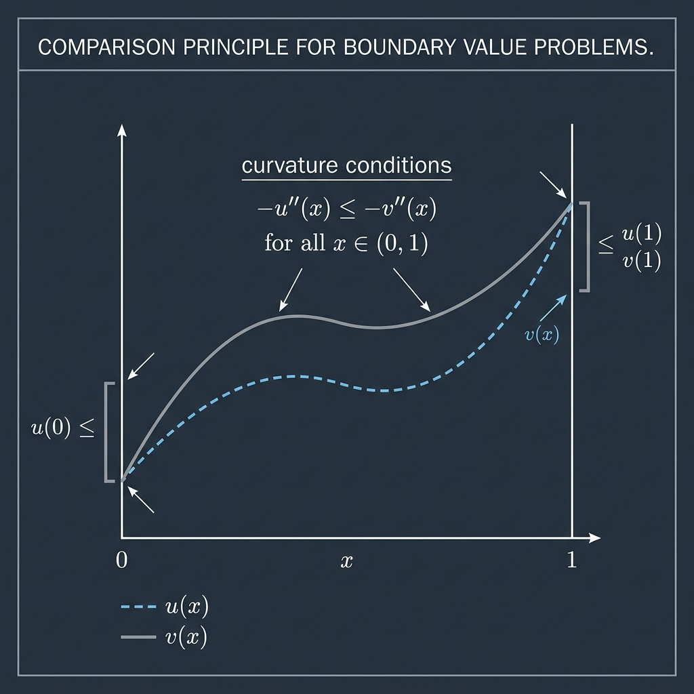

Comparison Principle for Boundary Value Problems

Mathematical Exposition
In the study of differential equations, a comparison principle is a theorem stating that an inequality between the derivatives of two functions, combined with inequalities on boundary conditions, implies a pointwise ordering between the functions themselves. For second-order elliptic equations, this is intimately linked to the maximum principle.
Specifically, let $u, v: [0, 1] \to \mathbb{R}$ be twice-differentiable functions. The comparison theorem states that if:
$$-u''(x) \le -v''(x) \quad \text{for all } x \in (0, 1)$$and the boundary conditions satisfy:
$$u(0) \le v(0) \quad \text{and} \quad u(1) \le v(1)$$then we have the pointwise ordering:
$$u(x) \le v(x) \quad \text{for all } x \in [0, 1]$$Convexity and the Maximum Principle
To prove this result, we define the difference function $w(x) = u(x) - v(x)$. Taking the second derivative of $w(x)$ gives:
$$w''(x) = u''(x) - v''(x)$$Since $-u''(x) \le -v''(x)$, we have $u''(x) \ge v''(x)$, which implies:
$$w''(x) \ge 0 \quad \text{for all } x \in (0, 1)$$A twice-differentiable function with a non-negative second derivative on an interval is convex. Since $w$ is convex on $[0, 1]$, any value of $w(x)$ for $x \in [0, 1]$ lies below the secant line connecting the boundary points $(0, w(0))$ and $(1, w(1))$:
$$w(x) \le (1 - x) w(0) + x w(1)$$Since $u(0) \le v(0)$ and $u(1) \le v(1)$, the boundary differences satisfy $w(0) \le 0$ and $w(1) \le 0$. Thus:
$$w(x) \le (1 - x) \cdot 0 + x \cdot 0 = 0 \implies u(x) - v(x) \le 0 \implies u(x) \le v(x)$$This completes the proof.
Lean 4 Formalization
The Lean 4 formalization utilizes Mathlib's real analysis and convexity libraries. The key steps verified in the proof are:
- Showing the difference function $w = u - v$ is twice differentiable on the open domain $J$ containing $[0, 1]$.
- Invoking `convexOn_of_deriv2_nonneg` to establish that $w$ is a convex function on the closed interval $[0, 1]$ by showing its second derivative is non-negative on the interior.
- Using the definition of a convex function to bound $w(x)$ by the linear combination of its endpoint values.
- Establishing the final inequality by arithmetic bounds since the coefficients $(1-x)$ and $x$ are non-negative for $x \in [0, 1]$.
import Mathlib
namespace Submission
theorem bvp_comparison (J : Set ℝ) (hJ_open : IsOpen J) (hJ_sub : Set.Icc (0 : ℝ) 1 ⊆ J)
(u v : ℝ → ℝ)
(hu : ∀ x ∈ J, HasDerivAt u (deriv u x) x)
(hu' : ∀ x ∈ J, HasDerivAt (deriv u) (deriv (deriv u) x) x)
(hv : ∀ x ∈ J, HasDerivAt v (deriv v x) x)
(hv' : ∀ x ∈ J, HasDerivAt (deriv v) (deriv (deriv v) x) x)
(hineq : ∀ x ∈ Set.Ioo (0 : ℝ) 1, -deriv (deriv u) x ≤ -deriv (deriv v) x)
(hu0 : u 0 ≤ v 0) (hu1 : u 1 ≤ v 1) :
∀ x ∈ Set.Icc (0 : ℝ) 1, u x ≤ v x := by
let w := fun x => u x - v x
have hw_deriv : ∀ x ∈ J, HasDerivAt w (deriv u x - deriv v x) x := fun x hx =>
(hu x hx).sub (hv x hx)
have hw_deriv' : ∀ x ∈ J, HasDerivAt (deriv w) (deriv (deriv u) x - deriv (deriv v) x) x := by
intro x hx
have : ∀ y ∈ J, deriv w y = deriv u y - deriv v y := fun y hy => (hw_deriv y hy).deriv
apply HasDerivAt.congr_of_eventuallyEq ((hu' x hx).sub (hv' x hx))
filter_upwards [hJ_open.mem_nhds hx]
intro y hy
exact (hw_deriv y hy).deriv
have h_convex : ConvexOn ℝ (Set.Icc 0 1) w :=
convexOn_of_deriv2_nonneg (convex_Icc 0 1)
(DifferentiableOn.continuousOn fun x hx => (hw_deriv x (hJ_sub hx)).differentiableAt.differentiableWithinAt)
(fun x hx => by
rw [interior_Icc] at hx
exact (hw_deriv x (hJ_sub (Set.Ioo_subset_Icc_self hx))).differentiableAt.differentiableWithinAt)
(fun x hx => by
rw [interior_Icc] at hx
exact (hw_deriv' x (hJ_sub (Set.Ioo_subset_Icc_self hx))).differentiableAt.differentiableWithinAt)
(fun x hx => by
rw [interior_Icc] at hx
have hxJ := hJ_sub (Set.Ioo_subset_Icc_self hx)
have : deriv (deriv w) x = deriv (deriv u) x - deriv (deriv v) x := (hw_deriv' x hxJ).deriv
change 0 ≤ deriv (deriv w) x
rw [this]
exact sub_nonneg.2 (neg_le_neg_iff.1 (hineq x hx)))
intro x hx
have h_le := h_convex.2 (Set.left_mem_Icc.2 zero_le_one) (Set.right_mem_Icc.2 zero_le_one)
(sub_nonneg.2 hx.2) hx.1 (by ring)
have h_smul0 : (1 - x) • (0 : ℝ) + x • (1 : ℝ) = x := by simp [smul_eq_mul]
rw [h_smul0] at h_le
have hw0 : w 0 ≤ 0 := sub_nonpos.2 hu0
have hw1 : w 1 ≤ 0 := sub_nonpos.2 hu1
have : (1 - x) • w 0 + x • w 1 ≤ 0 := by
simp [smul_eq_mul]
nlinarith [hx.1, hx.2, hw0, hw1]
exact sub_nonpos.1 (h_le.trans this)
end Submission